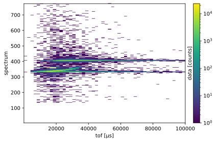
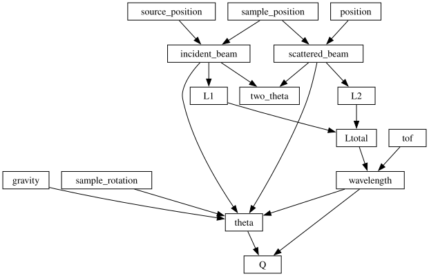
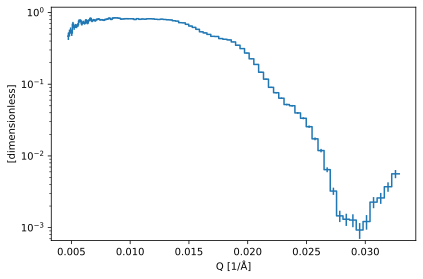

Collimated data reduction for OFFSPEC
Contents
Collimated data reduction for OFFSPEC#
This notebook implements a reduction workflow for reflectometry data collected from the ISIS instrument OFFSPEC using a collimated beam. This workflow implements the same procedure as the corresponding workflow in Mantid, see https://docs.mantidproject.org/nightly/techniques/ISIS_Reflectometry.html.
[1]:
from datetime import datetime
import platform
import scipp as sc
import scippneutron as scn
from orsopy import fileio
import ess
from ess import reflectometry
from ess.external import offspec
[2]:
logger = ess.logging.configure_workflow('offspec_reduction',
filename='offspec.log')
Loading the data#
In this example, we load some test data provided by the offspec package. We need a sample measurement (the sample is Air | Si(790 A) | Cu(300 A) | SiO2) and a direct beam measurement. The latter was obtained by positioning the detector directly in the beam of incident neutrons and moving the sample out of the way. It gives an estimate for the ISIS pulse structure as a function of time-of-flight.
[3]:
sample_full = sc.io.load_hdf5(offspec.data.sample())
sample = sample_full['data']
sample.coords['theta'] = sample_full.pop('Theta')[-1].data
Downloading file 'sample.h5' from 'https://public.esss.dk/groups/scipp/ess/offspec/1/sample.h5' to '/home/runner/.cache/ess/offspec/1'.
[4]:
direct_beam_full = sc.io.load_hdf5(offspec.data.direct_beam())
direct_beam = direct_beam_full['data']
direct_beam.coords['theta'] = direct_beam_full.pop('Theta')[-1].data
Downloading file 'direct_beam.h5' from 'https://public.esss.dk/groups/scipp/ess/offspec/1/direct_beam.h5' to '/home/runner/.cache/ess/offspec/1'.
[5]:
sample
[5]:
- spectrum: 769
- tof: 1
- position(spectrum)vector3m[nan nan nan], [ 0. -0.2074 3.62 ], ..., [0. 0.19028882 3.62 ], [0. 0.190808 3.62 ]
Values:
array([[ nan, nan, nan], [ 0. , -0.2074 , 3.62 ], [ 0. , -0.20688082, 3.62 ], ..., [ 0. , 0.18976965, 3.62 ], [ 0. , 0.19028882, 3.62 ], [ 0. , 0.190808 , 3.62 ]]) - sample_position()vector3m[0. 0. 0.]
Values:
array([0., 0., 0.]) - source_position()vector3m[ 0. 0. -23.83]
Values:
array([ 0. , 0. , -23.83]) - spectrum(spectrum)int324, 5, ..., 771, 772
Values:
array([ 4, 5, 6, 7, 8, 9, 10, 11, 12, 13, 14, 15, 16, 17, 18, 19, 20, 21, 22, 23, 24, 25, 26, 27, 28, 29, 30, 31, 32, 33, 34, 35, 36, 37, 38, 39, 40, 41, 42, 43, 44, 45, 46, 47, 48, 49, 50, 51, 52, 53, 54, 55, 56, 57, 58, 59, 60, 61, 62, 63, 64, 65, 66, 67, 68, 69, 70, 71, 72, 73, 74, 75, 76, 77, 78, 79, 80, 81, 82, 83, 84, 85, 86, 87, 88, 89, 90, 91, 92, 93, 94, 95, 96, 97, 98, 99, 100, 101, 102, 103, 104, 105, 106, 107, 108, 109, 110, 111, 112, 113, 114, 115, 116, 117, 118, 119, 120, 121, 122, 123, 124, 125, 126, 127, 128, 129, 130, 131, 132, 133, 134, 135, 136, 137, 138, 139, 140, 141, 142, 143, 144, 145, 146, 147, 148, 149, 150, 151, 152, 153, 154, 155, 156, 157, 158, 159, 160, 161, 162, 163, 164, 165, 166, 167, 168, 169, 170, 171, 172, 173, 174, 175, 176, 177, 178, 179, 180, 181, 182, 183, 184, 185, 186, 187, 188, 189, 190, 191, 192, 193, 194, 195, 196, 197, 198, 199, 200, 201, 202, 203, 204, 205, 206, 207, 208, 209, 210, 211, 212, 213, 214, 215, 216, 217, 218, 219, 220, 221, 222, 223, 224, 225, 226, 227, 228, 229, 230, 231, 232, 233, 234, 235, 236, 237, 238, 239, 240, 241, 242, 243, 244, 245, 246, 247, 248, 249, 250, 251, 252, 253, 254, 255, 256, 257, 258, 259, 260, 261, 262, 263, 264, 265, 266, 267, 268, 269, 270, 271, 272, 273, 274, 275, 276, 277, 278, 279, 280, 281, 282, 283, 284, 285, 286, 287, 288, 289, 290, 291, 292, 293, 294, 295, 296, 297, 298, 299, 300, 301, 302, 303, 304, 305, 306, 307, 308, 309, 310, 311, 312, 313, 314, 315, 316, 317, 318, 319, 320, 321, 322, 323, 324, 325, 326, 327, 328, 329, 330, 331, 332, 333, 334, 335, 336, 337, 338, 339, 340, 341, 342, 343, 344, 345, 346, 347, 348, 349, 350, 351, 352, 353, 354, 355, 356, 357, 358, 359, 360, 361, 362, 363, 364, 365, 366, 367, 368, 369, 370, 371, 372, 373, 374, 375, 376, 377, 378, 379, 380, 381, 382, 383, 384, 385, 386, 387, 388, 389, 390, 391, 392, 393, 394, 395, 396, 397, 398, 399, 400, 401, 402, 403, 404, 405, 406, 407, 408, 409, 410, 411, 412, 413, 414, 415, 416, 417, 418, 419, 420, 421, 422, 423, 424, 425, 426, 427, 428, 429, 430, 431, 432, 433, 434, 435, 436, 437, 438, 439, 440, 441, 442, 443, 444, 445, 446, 447, 448, 449, 450, 451, 452, 453, 454, 455, 456, 457, 458, 459, 460, 461, 462, 463, 464, 465, 466, 467, 468, 469, 470, 471, 472, 473, 474, 475, 476, 477, 478, 479, 480, 481, 482, 483, 484, 485, 486, 487, 488, 489, 490, 491, 492, 493, 494, 495, 496, 497, 498, 499, 500, 501, 502, 503, 504, 505, 506, 507, 508, 509, 510, 511, 512, 513, 514, 515, 516, 517, 518, 519, 520, 521, 522, 523, 524, 525, 526, 527, 528, 529, 530, 531, 532, 533, 534, 535, 536, 537, 538, 539, 540, 541, 542, 543, 544, 545, 546, 547, 548, 549, 550, 551, 552, 553, 554, 555, 556, 557, 558, 559, 560, 561, 562, 563, 564, 565, 566, 567, 568, 569, 570, 571, 572, 573, 574, 575, 576, 577, 578, 579, 580, 581, 582, 583, 584, 585, 586, 587, 588, 589, 590, 591, 592, 593, 594, 595, 596, 597, 598, 599, 600, 601, 602, 603, 604, 605, 606, 607, 608, 609, 610, 611, 612, 613, 614, 615, 616, 617, 618, 619, 620, 621, 622, 623, 624, 625, 626, 627, 628, 629, 630, 631, 632, 633, 634, 635, 636, 637, 638, 639, 640, 641, 642, 643, 644, 645, 646, 647, 648, 649, 650, 651, 652, 653, 654, 655, 656, 657, 658, 659, 660, 661, 662, 663, 664, 665, 666, 667, 668, 669, 670, 671, 672, 673, 674, 675, 676, 677, 678, 679, 680, 681, 682, 683, 684, 685, 686, 687, 688, 689, 690, 691, 692, 693, 694, 695, 696, 697, 698, 699, 700, 701, 702, 703, 704, 705, 706, 707, 708, 709, 710, 711, 712, 713, 714, 715, 716, 717, 718, 719, 720, 721, 722, 723, 724, 725, 726, 727, 728, 729, 730, 731, 732, 733, 734, 735, 736, 737, 738, 739, 740, 741, 742, 743, 744, 745, 746, 747, 748, 749, 750, 751, 752, 753, 754, 755, 756, 757, 758, 759, 760, 761, 762, 763, 764, 765, 766, 767, 768, 769, 770, 771, 772], dtype=int32) - theta()float64deg0.299933522939682
Values:
array(0.29993352) - tof(tof [bin-edge])float64µs9.328, 1.000e+05
Values:
array([9.32773781e+00, 1.00000383e+05])
- (spectrum, tof)DataArrayViewbinned data [len=0, len=0, ..., len=1, len=1]
dim='event', content=DataArray( dims=(event: 1101422), data=float32[counts], coords={'tof':float64[µs], 'pulse_time':datetime64[ns]})
Populating the ORSO header#
We will write the reduced data file following the ORSO `.ort`` standard <https://www.reflectometry.org/file_format/specification>`__, to enable a metadata rich header. We will create an empty header and then populate this.
The data source information#
[6]:
header = fileio.orso.Orso.empty()
header.data_source.owner = fileio.base.Person(
name="Joshanial F. K. Cooper",
affiliation="ISIS Neutron and Muon Source",
)
header.data_source.experiment = fileio.data_source.Experiment(
title="OFFSPEC Sample Data",
instrument="OFFSPEC",
start_date="2020-12-14T10:34:02",
probe="neutron",
facility="RAL/ISIS/OFFSPEC",
)
header.data_source.sample = fileio.data_source.Sample(
name="QCS sample",
category="gas/solid",
composition="Air | Si(790 A) | Cu(300 A) | SiO2",
)
header.data_source.measurement = fileio.data_source.Measurement(
instrument_settings=fileio.data_source.InstrumentSettings(
incident_angle=fileio.base.Value(
sample.coords["theta"].value, sample.coords["theta"].unit
),
wavelength=None,
polarization="unpolarized",
),
data_files=[
offspec.data.sample().rsplit("/", 1)[-1],
offspec.data.direct_beam().rsplit("/", 1)[-1],
],
scheme="energy-dispersive",
)
The reduction details#
The reduction section can start to be populated also. Entries such as corrections will be filled up through the reduction process.
[7]:
header.reduction.software = fileio.reduction.Software(
name="ess", version=ess.__version__, platform=platform.platform()
)
header.reduction.timestamp = datetime.now()
header.reduction.creator = fileio.base.Person(
name="I. D. Scientist",
affiliation="European Spallation Source",
contact="i.d.scientist@ess.eu",
)
header.reduction.corrections = []
header.reduction.computer = platform.node()
header.reduction.script = "offspec_mantid.ipynb"
To ensure that the header object is carried through the process, we assign it to the sample scipp.DataArray. The direct beam header object will be overwritten at the normalisation step so we will keep this empty.
[8]:
sample.attrs['orso'] = sc.scalar(header)
direct_beam.attrs['orso'] = sc.scalar(fileio.orso.Orso.empty())
Correcting the position of detector pixels#
The pixel positions in the sample data must be modified to account for the transformation on the detector by rotating it around the sample. We can achieve this by understanding that the sample has been rotated by some amount and that sample measurement has the specular peak at the same pixel as the direct beam measurement has the direct beam. Therefore, we move the sample detector along the arc of the sample rotation by \(2\omega\) (in the OFFSPEC files, \(\omega\) is called 'Theta',
which we stored as 'theta' earlier).
[9]:
from scipp.spatial import rotations_from_rotvecs
def pixel_position_correction(data: sc.DataArray):
rotation = rotations_from_rotvecs(rotation_vectors=sc.vector(value=[-2.0 * data.coords['theta'].value, 0, 0], unit=sc.units.deg))
return rotation * (data.coords['position'] - data.coords['sample_position'])
[10]:
logger.info("Correcting pixel positions in 'sample.nxs'")
sample.coords['position'] = pixel_position_correction(sample)
sample.attrs['orso'].value.data_source.measurement.comment = 'Pixel positions corrected'
We can visualize the data with a plot. In this plot of sample, we can see the specular intensity at around spectrum numbers 400-410. There is a more intense region, closer to spectrum number 300, which comes from the direct beam of neutrons traveling straight through our sample.
[11]:
sample.hist(tof=50).plot(norm='log')
[11]:

A region of interest is then defined for the detector. This is defined as twenty-five pixels around the specular peak or the direct beam. The scipp.DataArray is concatenated along the 'spectrum' coordinate at this stage, essentially collapsing all of the events onto a single pixel.
[12]:
sample_roi = sample['spectrum', 389:415].bins.concat('spectrum')
direct_beam_roi = direct_beam['spectrum', 389:415].bins.concat('spectrum')
sample_roi.attrs['orso'].value.reduction.corrections += ['region of interest defined as spectrum 389:415']
The position of these events is then defined as the centre of the region of interest.
[13]:
sample_roi.coords['position'] = sample.coords['position'][401]
direct_beam_roi.coords['position'] = direct_beam.coords['position'][401]
Coordinate transform graph#
To compute the wavelength \(\lambda\), the scattering angle \(\theta\), and the \(Q\) vector for our data we can use a coordinate transform graph. The reflectometry graph is discussed in detail in the Amor reduction notebook and the one used here is nearly identical. The only difference is the Amor instrument uses choppers to define the pulse of neutrons, which is not the case here. The OFFSPEC graph is the standard reflectometry graph, shown below.
[14]:
graph = {**reflectometry.conversions.specular_reflection()}
sc.show_graph(graph, simplified=True)
[14]:

Computing the wavelength#
The neutron wavelengths can be computed with transform_coords and the graph shown above. We will only use neutrons in the wavelength range of 2 Å to 15.0 Å.
[15]:
wavelength_edges = sc.linspace(dim='wavelength', start=2, stop=15, num=2, unit='angstrom')
sample_wav = reflectometry.conversions.tof_to_wavelength(sample_roi, wavelength_edges,graph=graph)
Since the direct beam measurement is not a reflectometry measurement, we use the no_scatter_graph to convert this to wavelength.
[16]:
no_scatter_graph = {**scn.conversion.graph.beamline.beamline(scatter=False),
**scn.conversion.graph.tof.elastic_wavelength(start='tof')}
sc.show_graph(no_scatter_graph, simplified=True)
direct_beam_wav = direct_beam_roi.transform_coords('wavelength', graph=no_scatter_graph)
direct_beam_wav = direct_beam_wav.bin(wavelength=wavelength_edges)
Normalization by monitor#
It is necessary to normalize the sample and direct beam measurements by the summed monitor counts, which accounts for different lengths of measurement and long-timescale natural variation in the pulse. This will ensure that the final data has the correct scaling when the reflectivity data is normalized. First, we convert the data to wavelength, using the no_scatter_graph used previously for the direct beam.
The most reliable monitor for the OFFSPEC instrument is 'monitor2' in the file, therefore this is used.
[17]:
sample_mon_wav = sample_full["monitors"]["monitor2"]["data"].transform_coords(
"wavelength", graph=no_scatter_graph
)
direct_beam_mon_wav = direct_beam_full["monitors"]["monitor2"]["data"].transform_coords(
"wavelength", graph=no_scatter_graph
)
A background subtraction is then performed on the monitor data, where the background is taken as any counts at wavelengths greater than 15 Å.
Note
We need to drop the variances of the monitor (using sc.values) because the monitor gets broadcast across all detector pixels. This would introduce correlations in the results and is thus not allowed by Scipp. See Heybrock et al. (2023).
[18]:
wav_min = 2 * sc.Unit('angstrom')
wav_max = 15 * sc.Unit('angstrom')
[19]:
sample_mon_wav -= sc.values(sample_mon_wav['wavelength', wav_max:].mean())
direct_beam_mon_wav -= sc.values(direct_beam_mon_wav['wavelength', wav_max:].mean())
sample_wav.attrs['orso'].value.reduction.corrections += ['monitor background subtraction, background above 15 Å']
The monitors are then summed along the 'wavelength' and this value is used to normalise the data.
[20]:
sample_mon_wav_sum = sample_mon_wav['wavelength', wav_min:wav_max].sum()
direct_beam_mon_wav_sum = direct_beam_mon_wav['wavelength', wav_min:wav_max].sum()
sample_norm = sample_wav / sc.values(sample_mon_wav_sum)
direct_beam_norm = direct_beam_wav / sc.values(direct_beam_mon_wav_sum)
sample_wav.attrs['orso'].value.reduction.corrections += ['normalisation by summed monitor']
Normalisation of sample by direct beam#
The sample and direct beam measurements (which have been normalised by monitor counts) are then histogrammed in wavelength to 100 geometrically spaced points. The histogrammed direct beam is then used to normalised the sample.
Importantly, some relevant metadata (including the ORSO header object) is carried over.
[21]:
edges = sc.geomspace(
dim="wavelength", start=2, stop=14, num=100, unit=sc.units.angstrom
)
sample_norm_hist = sample_norm.hist(wavelength=edges)
sample_norm_hist.coords.set_aligned('theta', False)
direct_beam_norm_hist = direct_beam_norm.hist(wavelength=edges)
direct_beam_norm_hist.coords.set_aligned('theta', False)
norm_wav = sample_norm_hist / direct_beam_norm_hist
norm_wav.attrs["orso"] = sample_wav.attrs["orso"]
norm_wav.coords["theta"] = sample_wav.coords["theta"]
norm_wav.attrs["orso"].value.reduction.corrections += ["normalisation by direct beam"]
Conversion to \(Q\)#
This normalised data can then be used to compute the reflectivity as a function of the scattering vector \(Q\).
[22]:
norm_q = reflectometry.conversions.theta_to_q(norm_wav, graph=graph)
Which we can visualise.
[23]:
norm_q.plot(norm='log')
[23]:

Saving the scipp-reduced data as .ort#
We constructed the ORSO header through the reduction process. We can now make use of this when we save our .ort file.
First, we will assume a 3 % of \(Q\) resolution function to be included in our file.
[24]:
norm_q.coords['sigma_Q'] = sc.midpoints(norm_q.coords['Q']) * 0.03
Then, due a bug in orsopy, we need to overwrite the incident angle and wavelength that have been out-populated by the reduction.
[25]:
incident_angle = norm_q.attrs['orso'].value.data_source.measurement.instrument_settings.incident_angle
wavelength = norm_q.attrs['orso'].value.data_source.measurement.instrument_settings.wavelength
norm_q.attrs['orso'].value.data_source.measurement.instrument_settings.wavelength = fileio.base.ValueRange(min=float(wavelength.min), max=float(wavelength.max), unit=wavelength.unit)
norm_q.attrs['orso'].value.data_source.measurement.instrument_settings.incident_angle = fileio.base.Value(magnitude=float(incident_angle.magnitude), unit=incident_angle.unit)
And it is necessary to add the column for our uncertainties, which details the meaning of the uncertainty values we have given.
[26]:
norm_q.attrs['orso'].value.columns.append(fileio.base.ErrorColumn(error_of='R', error_type='uncertainty', value_is='sigma'))
norm_q.attrs['orso'].value.columns.append(fileio.base.ErrorColumn(error_of='Q', error_type='resolution', value_is='sigma'))
Finally, we can save the file.
[27]:
reflectometry.io.save_ort(norm_q, 'offspec.ort')
[28]:
!head offspec.ort
# # ORSO reflectivity data file | 1.0 standard | YAML encoding | https://www.reflectometry.org/
# data_source:
# owner:
# name: Joshanial F. K. Cooper
# affiliation: ISIS Neutron and Muon Source
# experiment:
# title: OFFSPEC Sample Data
# instrument: OFFSPEC
# start_date: 2020-12-14T10:34:02
# probe: neutron